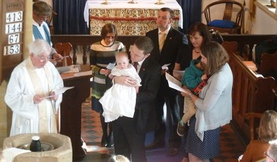
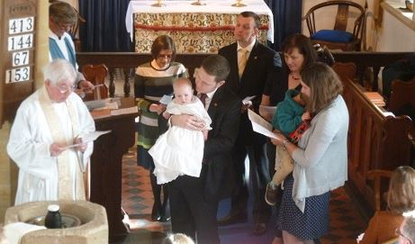

Free from administrative duties, the Resident Minister will be able to concentrate on pastoral involvement throughout the Six, sustaining the efforts of our staunch band of pilgrims and reaching out to those who have yet to join our mission.
The Resident Minister will bring a new voice to the pulpit in our sacramental services and share with the Reader in Charge the performance of matins, family and childrens services, baptisms, weddings and funerals. Attendance at social events will cement the bond between the church and the people.
In view of the scattered nature of the Benefice, a driving licence and car are essential together with sufficient computer skills to maintain communications throughout the Six. All reasonable travel and out-of-pocket expenses are paid by the Benefice.
The weekly workload will normally comprise six sessions, a “session” being a morning, afternoon or evening, including one or two services on a Sunday. We propose one Sunday off a month. Provision is made for six weeks holiday per annum.
Although the post is unpaid it comes with a stone-built cottage within 200 yards of one of our churches. Council tax and water rates are paid.
We welcome applications from suitable candidates irrespective of age, gender, marital status, national origin or tradition of worship.
We would value the opportunity to discuss how our partnership with a new Resident Minister would work in practice. We are keen to maximise their particular gifts, whether they be in pastoral care, discipleship, teaching, leading worship, promoting young families or whatever.
Our abiding concern is that our new priest should not feel in any way encumbered but freed to pursue a fruitful calling with our steadfast band of pilgrims
If after prayerful consideration you feel this may be the sort of challenge you seek please contact either:
 
